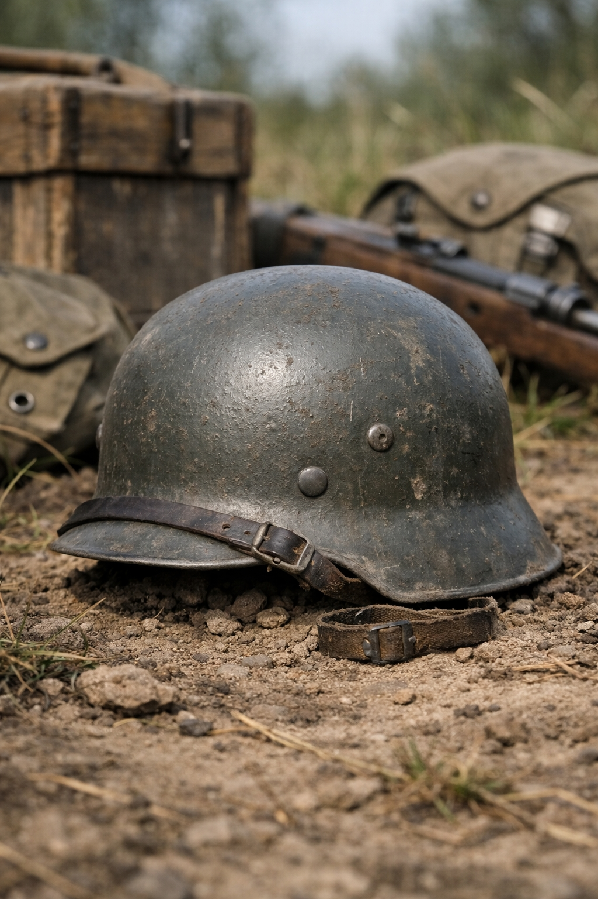

Copies Allemandes WW2 – Reconnaître une reproduction

1. Les formes générales
Les copies modernes présentent souvent :
• Une forme trop ronde ou trop régulière
• Une visière trop courte
• Des bords trop épais
Les casques originaux M35, M40 et M42 ont des profils très spécifiques selon l’usine de fabrication.
2. Les rivets et aérations